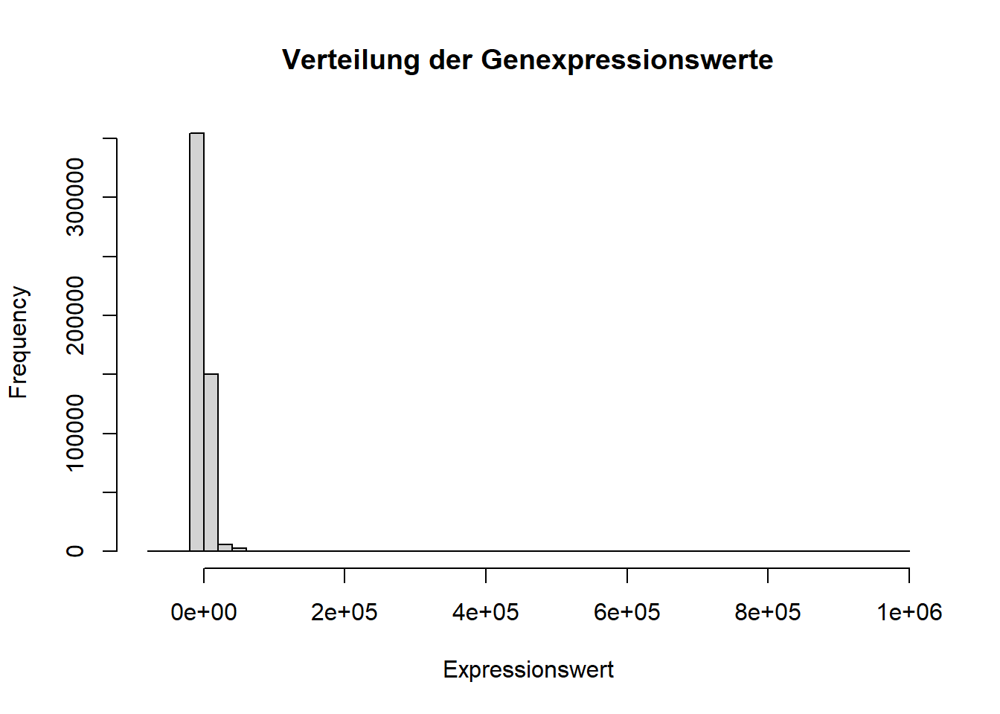
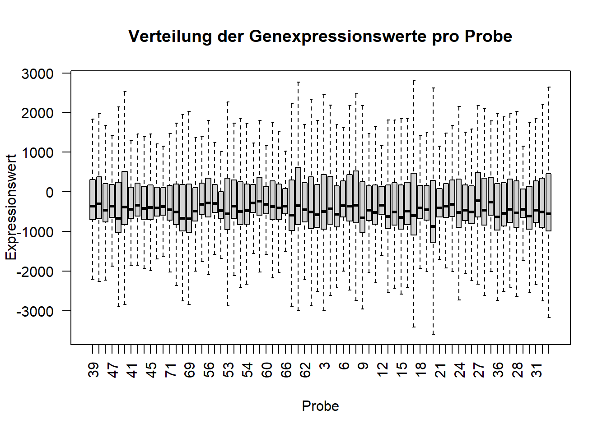
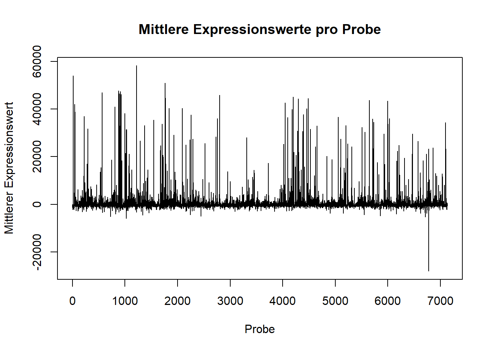

Ziel dieser Analyse ist es, die Genexpressionsdaten des Golub-Datensatzes zu untersuchen und Unterschiede zwischen den beiden Leukämieformen Acute Lymphoblastic Leukemia (ALL) und Acute Myeloid Leukemia (AML) zu charakterisieren.
2 Ergebnisse
2.1 QA/QC und explorative Datenanalyse
Zu Beginn wurde die Qualität und Struktur der Expressionsdaten überprüft. Dazu wurden Dimensionen und die Struktur der Analyse-Matrix sowie die Metadaten betrachtet. Zusätzlich wurde überprüft, ob fehlende Werte in der Analyse-Matrix vorhanden sind.
# Anzahl der Gene mit mindestens einem fehlenden Wertsum(colSums(is.na(analysis_matrix)) >0)
[1] 72
2.1.1 Verteilung der Expressionswerte
Anschließend wurde die Verteilung der Genexpressionswerte untersucht. Hierzu wurden deskriptive Kennwerte berechnet und die Expressionswerte in einem Histogramm dargestellt.
summary(as.vector(analysis_matrix))
Min. 1st Qu. Median Mean 3rd Qu. Max. NAs
-62718.7 -785.7 -432.7 648.9 241.7 998673.0 118
hist(as.vector(analysis_matrix),breaks =50,main ="Verteilung der Genexpressionswerte",xlab ="Expressionswert")

Abbildung 1: Verteilung der Genexpressionswerte.
2.1.2 Verteilung der Expressionswerte pro Probe
Um zu überprüfen, ob sich die einzelnen Proben hinsichtlich ihrer Expressionswerte deutlich von den übrigen Proben unterscheiden, wurden die Expressionswerte pro Probe als Boxplots dargestellt.
boxplot(t(analysis_matrix),las =2,outline =FALSE,main ="Verteilung der Genexpressionswerte pro Probe",xlab ="Probe",ylab ="Expressionswert")

Abbildung 2: Verteilung der Expressionswerte pro Probe.
2.1.3 Mittlere Expressionswerte pro Probe
Für die Identifikation von Proben mit besonders hohen/niedrigen mittleren Expressionswerten, wurden die Mittelwerte der Expressionswerte für jede Probe berechnet und verglichen.
Min. 1st Qu. Median Mean 3rd Qu. Max.
-27960.0 -685.4 -349.2 649.7 373.1 58175.3
plot( sample_means,type ="h",main ="Mittlere Expressionswerte pro Probe",xlab ="Probe",ylab ="Mittlerer Expressionswert")

Abbildung 3: Mittlere Expressionswerte pro Probe.
2.1.4 Ähnlichkeit der Proben untereinander
Für die Untersuchung der Ähnlichkeit zwischen den Proben hinsichtlich ihres Genexpressionsprofils, wird die Korrelation zwischen den Proben berechnet. Die Ergebnisse wurden anschließend als Heatmap dargestellt.
Min. 1st Qu. Median Mean 3rd Qu. Max.
0.07954 0.36120 0.51104 0.55897 0.80080 1.00000
heatmap( sample_cor,main ="Korrelation zwischen den Proben",xlab ="Probe",ylab ="Probe")
Abbildung 4: Korrelation zwischen den Proben als Heatmap.
2.1.5 Identifikation von Proben mit niedriger mittlerer Korrelation
Um mögliche auffällige Proben zu identifizieren, wurde für jede Probe die mittlere Korrelation mit allen anderen probenm berechnet. Proben mit niedrigen mittleren Korrelationswerten weisen ein stärker abweichendes Genexpressionsprofil auf.
Die erste Hauptkomponente (PC1) erklärte 20,58 % und die zweite Hauptkomponente (PC2) 12,26 % der Gesamtvarianz. Zusammen erklärten PC1 und PC2 somit 32,84 % der Varianz im Datensatz. Die Verteilung der erklärten Varianz ist in Abbildung 1 dargestellt.
Screeplot der PCA
Abbildung 1: Screeplot der Hauptkomponentenanalyse mit dem Anteil der durch die einzelnen Hauptkomponenten erklärten Varianz.
In der Darstellung der Proben entlang von PC1 und PC2 zeigte sich keine eindeutige Trennung zwischen den ALL- und AML-Proben. Die beiden Gruppen überlappten über weite Bereiche des PCA-Plots. Einzelne Proben lagen weiter vom Hauptbereich der übrigen Proben entfernt, insgesamt bildeten sich jedoch keine klar voneinander abgegrenzten Cluster entsprechend der Leukämieform. Die Verteilung der ALL- und AML-Proben ist in Abbildung 2 dargestellt.
PCA der ALL- und AML-Proben
Abbildung 2: PCA der ALL- und AML-Proben anhand der ersten beiden Hauptkomponenten.
Die Analyse der Loadings zeigte, welche Features besonders stark zu den ersten beiden Hauptkomponenten beitrugen. Zu den stärksten positiven Loadings von PC1 gehörten unter anderem CD47, TGOLN2, CRHBP und TCP1, während BBS9, SMPDL3B, AP3S2 und MPV17 zu den stärksten negativen Loadings zählten. Für PC2 zeigten PRKAR2A, PRKCE, SLC12A5, ZNF44 und NR4A3 starke positive Loadings. Zu den stärksten negativen Loadings gehörten SCN2A, FEV, MAP2K1 und MORF4L2. Die stärksten positiven und negativen Loadings von PC1 sind in Abbildung 3 dargestellt.
Stärkste Loadings von PC1
Abbildung 3: Features mit den stärksten positiven und negativen Loadings auf PC1.
2.3 Clustering
2.3.1 Fragestellung
Ziel der Clusteranalyse war es zu untersuchen, ob sich anhand der Genexpressionsprofile ohne Verwendung der bekannten Diagnose natürliche Gruppen innerhalb der Proben identifizieren lassen und ob diese Gruppen mit den Diagnosen ALL und AML übereinstimmen.
2.3.2 Datenvorbereitung
Für die Clusteranalyse wurde die zuvor bereinigte Expressionsmatrix verwendet. Features mit fehlenden Werten wurden ausgeschlossen, da die verwendeten Distanz- und Clusteringverfahren vollständige Daten voraussetzen. Anschließend wurden die 25 % der Features mit der höchsten Varianz ausgewählt. Dadurch sollten wenig variable Features, die nur wenig zur Unterscheidung der Proben beitragen, bei der Distanzberechnung weniger Einfluss erhalten. Die Feature-Auswahl erfolgte unabhängig von der bekannten Diagnose, um den unüberwachten Charakter der Clusteranalyse zu erhalten.
Die ausgewählten Features wurden anschließend standardisiert. Dadurch besitzen die Features einen Mittelwert von 0 und eine Standardabweichung von 1, sodass Unterschiede in der Größenordnung der Expressionswerte die Distanzberechnung nicht dominieren.
Für das hierarchische Clustering wurden euklidische Distanzen zwischen den Proben auf Grundlage der standardisierten Expressionswerte berechnet. Als Linkage-Methode wurde Ward.D2 verwendet. Dabei werden schrittweise diejenigen Cluster zusammengeführt, deren Zusammenführung zu einem möglichst geringen Anstieg der Streuung innerhalb der Cluster führt. Das resultierende Dendrogramm wurde anschließend in zwei Cluster unterteilt, um die erhaltene Gruppierung mit den beiden Diagnosen ALL und AML vergleichen zu können.
Abbildung 4: Hierarchisches Clustering der Proben anhand der Genexpressionsprofile.
2.3.4 Vergleich mit der ALL/AML-Diagnose
Das hierarchische Clustering ergab zwei unterschiedlich große Cluster. Cluster 1 umfasste 16 Proben und Cluster 2 umfasste 56 Proben. Um zu untersuchen, ob diese Gruppierung mit der bekannten Diagnose übereinstimmt, wurde die Verteilung der ALL- und AML-Proben auf die beiden Cluster betrachtet.
Cluster 1 enthielt 10 ALL- und 6 AML-Proben, während Cluster 2 aus 37 ALL- und 19 AML-Proben bestand. Beide Diagnosen waren somit in beiden Clustern vertreten. Eine eindeutige Trennung der Proben nach ALL und AML war anhand der Clusterzugehörigkeit nicht erkennbar.
Um zu prüfen, ob dennoch ein statistischer Zusammenhang zwischen Clusterzugehörigkeit und Diagnose bestand, wurde ein Fisher-Exakt-Test durchgeführt.
Fisher's Exact Test for Count Data
data: cluster_diagnosis
p-value = 0.7752
alternative hypothesis: true odds ratio is not equal to 1
95 percent confidence interval:
0.2377035 3.3316031
sample estimates:
odds ratio
0.8577397
Der Fisher-Exakt-Test ergab keinen statistisch signifikanten Zusammenhang zwischen Clusterzugehörigkeit und ALL/AML-Diagnose (p = 0,775). Die durch das hierarchische Clustering identifizierte Gruppierung entsprach somit nicht der bekannten diagnostischen Einteilung in ALL und AML.
2.3.5 Heatmap der Expressionsprofile
Zur Visualisierung der Expressionsmuster wurden die 50 Features mit der höchsten Varianz dargestellt. Die Heatmap basiert auf den zuvor standardisierten Expressionswerten. Die Proben wurden in der Heatmap erneut anhand euklidischer Distanzen und Ward.D2 hierarchisch angeordnet. Zusätzlich wurde die bekannte ALL/AML-Diagnose der einzelnen Proben als Annotation dargestellt.
Abbildung 5: Heatmap der 50 variabelsten Features. Die Annotation zeigt die bekannte ALL/AML-Diagnose der Proben.
Die Heatmap zeigte deutliche Unterschiede in den Expressionsmustern zwischen einzelnen Probengruppen. Die ALL- und AML-Proben waren jedoch über die verschiedenen Äste des hierarchischen Clusterings verteilt und bildeten keine klar voneinander getrennten Gruppen. Damit unterstützt die Visualisierung das Ergebnis des vorherigen Vergleichs zwischen Clusterzugehörigkeit und Diagnose.
Die Heatmap dient dabei primär der Visualisierung charakteristischer Expressionsmuster und basiert aus Gründen der Darstellbarkeit nur auf den 50 variabelsten Features, während das zuvor durchgeführte hierarchische Clustering auf den 25 % variabelsten Features basierte.
2.3.6 K-means-Clustering
Ergänzend zum hierarchischen Clustering wurde ein k-means-Clustering mit zwei Clustern durchgeführt. Dadurch sollte untersucht werden, ob ein alternatives unüberwachtes Clusteringverfahren eine vergleichbare Gruppierung der Proben ergibt. Um den Einfluss der zufälligen Initialisierung zu reduzieren, wurden 25 verschiedene Startkonfigurationen verwendet. Für die Reproduzierbarkeit wurde zuvor ein fester Zufallsstart gesetzt.
Auch das k-means-Clustering ergab zwei Cluster mit 16 bzw. 56 Proben. Cluster 1 enthielt 10 ALL- und 6 AML-Proben, Cluster 2 enthielt 37 ALL- und 19 AML-Proben. Damit zeigte sich auch beim k-means-Clustering keine eindeutige Trennung von ALL und AML.
Um zu überprüfen, ob beide Clusteringverfahren lediglich gleich große oder tatsächlich identische Cluster erzeugten, wurden die individuellen Clusterzuordnungen miteinander verglichen.
Das hierarchische Clustering und das k-means-Clustering führten zu einer identischen Zuordnung aller 72 Proben. Beide Verfahren identifizierten somit dieselbe Struktur in den Expressionsdaten. Diese Gruppierung entsprach jedoch nicht der bekannten Einteilung in ALL und AML.
2.3.7 Sensitivitätsanalyse
Um zu überprüfen, ob die Ergebnisse von der gewählten Datenvorverarbeitung abhängen, wurde das hierarchische Clustering zusätzlich mit unterschiedlichen Anteilen variabler Features sowie ohne Standardisierung durchgeführt.
Das Clustering ohne Standardisierung führte zu einer identischen Zuordnung aller 72 Proben wie die standardisierte Analyse. Auch bei Verwendung der 10 %, 25 % und 50 % variabelsten Features waren die Clusterzuordnungen identisch. Bei Verwendung aller 7.059 vollständigen Features änderte sich die Zuordnung von vier der 72 Proben. Die fehlende Übereinstimmung der Cluster mit der ALL/AML-Diagnose blieb dabei bestehen. Die Ergebnisse erwiesen sich somit als robust gegenüber den untersuchten Varianten der Datenvorverarbeitung.
2.3.8 Fazit der Clusteranalyse
Für die gewählte Feature-Auswahl identifizierten sowohl hierarchisches Clustering als auch k-means dieselbe Gruppierung der 72 Proben in zwei Cluster mit 16 bzw. 56 Proben. Sowohl das hierarchische Clustering mit euklidischer Distanz und Ward.D2 als auch das k-means-Clustering führten zu einer identischen Zuordnung der Proben. Die gefundene Clusterstruktur entsprach jedoch nicht der bekannten Einteilung in ALL und AML. Der Fisher-Exakt-Test zeigte keinen statistisch signifikanten Zusammenhang zwischen Clusterzugehörigkeit und Diagnose (p = 0,775). Auch die Heatmap der 50 variabelsten Features zeigte keine eindeutige Trennung der beiden Diagnosegruppen.
2.4 Differentielle Genexpression
2.4.1 Fragestellung
Unterscheiden sich ALL und AML systematisch in ihrer Genexpression und lassen sich Expressionsmerkmale identifizieren, die zwischen den beiden Leukämieformen unterschiedlich ausgeprägt sind?
2.4.2 Analyse
Für die Analyse wurde zunächst der initiale Datensatz mit 38 Proben verwendet. Dieser umfasst 27 ALL- und 11 AML-Proben.
Zur Untersuchung der differentiellen Genexpression wurde die Methode limma verwendet. Dabei wurde die Diagnose als Gruppierungsvariable mit den beiden Ausprägungen ALL und AML verwendet. Für die Expressionsmerkmale wurden lineare Modelle berechnet und anschließend mit eBayes() statistisch ausgewertet.
Da gleichzeitig sehr viele Expressionsmerkmale untersucht wurden, wurden die p-Werte mit der Benjamini-Hochberg-Methode für multiples Testen korrigiert. Als Signifikanzkriterium wurde eine False Discovery Rate (FDR) von < 0,05 verwendet.
Insgesamt wurden 178 Expressionsmerkmale mit einer FDR < 0,05 identifiziert. Damit zeigen zahlreiche Expressionsmerkmale im untersuchten Datensatz statistisch signifikante Unterschiede zwischen ALL und AML.
Die Verteilung der Expressionsunterschiede und ihrer statistischen Signifikanz ist in Abbildung 4 dargestellt.
Abbildung 6: Differential-Expression-Plot für den Vergleich der Genexpression zwischen AML und ALL. Die hervorgehobenen Punkte entsprechen Expressionsmerkmalen mit einer FDR < 0,05.
2.4.4 Heatmap der Top-20-Expressionsmerkmale
Für eine detailliertere Betrachtung wurden die 20 Expressionsmerkmale mit den kleinsten adjustierten p-Werten ausgewählt. Die Expressionswerte wurden für die Darstellung zeilenweise standardisiert.
# Heatmap der Top-20 differentiell exprimierten Merkmalelibrary(pheatmap)# Signifikante Merkmale auswählensig_genes <-rownames(results)[results$adj.P.Val <0.05]# Nur Merkmale verwenden, die in der Expressionsmatrix vorhanden sindsig_genes <- sig_genes[ sig_genes %in%colnames(analysis_matrix_initial)]# Merkmale mit fehlenden Werten ausschließensig_genes <- sig_genes[!sapply( sig_genes,function(g) anyNA(analysis_matrix_initial[, g]) )]# Nach adjustiertem p-Wert sortierensig_genes <- sig_genes[order(results[sig_genes, "adj.P.Val"])]# Top 20 auswählentop20_genes <-head(sig_genes, 20)# Expressionsmatrix für die Heatmap erstellenheatmap_matrix <-t( analysis_matrix_initial[, top20_genes, drop =FALSE])# Diagnose als Annotationannotation_col <-data.frame(Diagnose = metadata_initial$Diagnosis)rownames(annotation_col) <-rownames(metadata_initial)# Heatmap erstellenpheatmap( heatmap_matrix,scale ="row",annotation_col = annotation_col,cluster_rows =TRUE,cluster_cols =TRUE,show_rownames =TRUE,show_colnames =FALSE,main ="Top 20 differentiell exprimierte Gene")
Abbildung 7: Heatmap der 20 am stärksten differentiell exprimierten Expressionsmerkmale im initialen Datensatz. Die Proben sind entsprechend ihrer Diagnose als ALL oder AML annotiert.
Die Heatmap zeigt unterschiedliche Expressionsmuster der ausgewählten Merkmale über die untersuchten Proben. Die Annotation der Proben ermöglicht dabei einen direkten Vergleich der Expressionsmuster zwischen ALL und AML.
2.4.5 Interpretation
Die Analyse zeigt, dass sich ALL und AML im untersuchten Datensatz in mehreren Expressionsmerkmalen systematisch unterscheiden. Dies unterstützt die Hypothese, dass sich die beiden Leukämieformen anhand ihrer Genexpressionsprofile unterscheiden lassen.
Die identifizierten Expressionsmerkmale sollten dabei als statistisch unterschiedliche Merkmale zwischen den beiden Gruppen interpretiert werden und nicht als einzelne diagnostische Marker.
Unter den 20 am stärksten differentiell exprimierten Merkmalen befinden sich mehrere Probe-Sets, die bereits in früheren Analysen des Golub-Leukämiedatensatzes als relevante Merkmale für die Unterscheidung von ALL und AML beschrieben wurden.
Beispielsweise entspricht L08246_at dem Gen MCL1 (myeloid cell leukemia 1). MCL1 ist an der Regulation des Zellüberlebens beteiligt. M11147_at entspricht FTL (ferritin light chain), einem Bestandteil des Ferritin-Komplexes, der an der intrazellulären Eisenspeicherung beteiligt ist. Y00787_s_at entspricht IL8/CXCL8 (Interleukin-8), einem Chemokin, das an Entzündungs- und Signalprozessen beteiligt ist. Auch U46751_at, das für das p62-Protein (SQSTM1) steht, wurde in früheren Analysen des Golub-Datensatzes als relevantes Expressionsmerkmal beschrieben.
Die Übereinstimmung einzelner identifizierter Merkmale mit früheren Analysen des Golub-Datensatzes unterstützt die biologische Relevanz der gefundenen Expressionsunterschiede. Die Ergebnisse stellen jedoch keine Aussage darüber dar, dass einzelne Gene allein zur Diagnose von ALL oder AML ausreichen.
2.4.7 Limitationen
Die Analyse basiert auf dem initialen Datensatz mit 38 Proben, darunter 27 ALL- und 11 AML-Proben. Aufgrund der unterschiedlichen Gruppengrößen und der insgesamt begrenzten Stichprobengröße sollten die identifizierten Expressionsunterschiede mit Vorsicht interpretiert werden.
Außerdem wurden die Expressionsmerkmale anhand ihrer statistischen Signifikanz ausgewählt. Eine statistische Signifikanz einzelner Merkmale bedeutet dabei nicht automatisch eine biologische oder diagnostische Relevanz. Für eine weitergehende Bewertung wären unabhängige Datensätze und zusätzliche biologische Validierungen erforderlich.
Der vollständige R-Code zur Analyse der differentiellen Genexpression ist zusätzlich im R-Skript “05_differential_expression.R” im Repository dokumentiert.